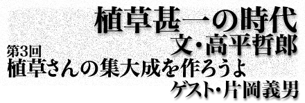

|
|
|
|  |
| 植草甚一編集長のもと、七三年八月にスタートした、今や伝説となった『ワンダーランド』。それまでの雑誌にはなかった斬新なデザインやアイデアで、多くの若者たちを夢中にさせ、その後の雑誌づくりに大きく影響をあたえた。第３回目のゲストは、『ワンダーランド』の創刊に中心メンバーとして参加していた、作家の片岡義男氏。 |
|
テディ片岡のペンネームで、なんだか胡散くさそうな人を想像していたが、初めて逢った片岡さんは日系二世の雰囲気だった。実際、ハワイの血が何分の一だか混じっていると聞かされ、リーゼントの髪もジーンズにダンガリーのシャツ、ウエスタンブーツにも納得がいった。いつも淡々と静かな話し方で、かなりブラックなジョークをする人だった。当時、仲間の片岡ファンの間で話題になっていた短編小説集『テディ片岡デラックス』を神田の古本屋で見つけたのは、『ローリング・ストーン』誌の日本版の同志として何度か会合をかわした後だった。この本は筒井康隆さん風のドタバタあり、まるで翻訳小説を読むようなアメリカ小説があり、読者をたちまちの内にテディ・ファンにしてしまう不思議な力があった。『ストーン』誌が駄 目になり、『ワンダーランド』がスタートしたころから、片岡さんはテディを止め、片岡義男の本名で執筆するようになった。もしかしたらこの日の出逢いは植草さんの葬式以来かもしれない。それほど片岡さんとは疎遠になってしまった。白髪のぼくは片岡さんに驚いた顔をさせてしまったのに、久し振りにあった片岡さんは、ちょっぴり歳とったかなという程度で、雰囲気も着ているものも昔のままだった。 片岡さんが、最初に植草さんのものをお読みになったってのは、何年ぐらいなんですか。 映画雑誌やジャズの雑誌に書かれた短い記事を読むくらいで、ほかはズーと読んでなかった。名前は知ってたけど。ちょっと特徴のある名前でしょう、覚えちゃうじゃない、植草甚一って。 ■手で触って楽しむ人 そうすると『ワンダーランド』で植草さんとつながってても不思議はないところに片岡さんいらした。 いや、不思議は不思議でしょう。時代背景を言うと、あそこに植草さんがいるよと指さされたのが六二､三年で、『ワンダーランド』は七二､三年。そうすると十年の期間があって、その十年間ていうのはものすごい高度成長だったわけですよね、もうすさまじい右肩上がりで。そうすると経済の間口が広がっていって、活字メディアも増えますよね。そして『平凡パンチ』という若者向けのいわゆる活字メディアってものが出たわけですよね。そうするとそれまであんまり使われてなかった若者という言葉も社会全体の言葉になりますよね。そこからどんどん要するにメディアがたくさん広がっていったわけじゃないですか。その延長の中で、『ワンダーランド』が出るわけです。だから時代背景としては、ごく自然なことなんですよね。 本来やるはずだった『ローリング・ストーン』ならなおさら解かりやすいですよね。 なおさら解かりやすいね。もっと流行の前面でやろうとしたわけだから。要するに『ワンダーランド』っていう雑誌なり、新聞なりを毎号買って見てれば、新しいことというか、気にすべきことというか、押さえるべきことというか、それ全部とりあえず活字で押さえられるという、そういう媒体を作ろうという話だったんですね。 『ワンダーランド』になったとき思いましたけど、デザイナーがあれだけ主張する雑誌ってのは新しいですよね。 だって、スペースが大きいですから、デザイナーの力が無かったらどうにもならないですよ。あのスペースをデザインできる人って、相当才能がなきゃいけないし、腕力も必要だし。結果 としてデザインがまあとりあえずちゃんとしてるかなって出来映えにはなりましたよね。『新聞活字』で組んだのは読みやすいし、見た目も新鮮でしょう。見た目の新鮮さってのはあの頃非常に大事なんですよ。外側が新鮮だと中もちょっと新鮮かなっていうふうに思ってくれる人たちがたくさんいたわけでしょう。 片岡さん、あれ覚えてますか？ あの出版記念会の後、植草さんのいろんなもん整理してたら、『ひかり』かなんかの煙草の裏に、出席した人としない人の名前が書いてあって、×○ってあってね。 それが出てきたの？ そういうのはちゃんと出版物にしておくといいね。要するに原稿ではなくて、植草さんがそういうふうに書いたメモ類を一冊の本にするといいね。それ貴重ですよ。よく解かった人が一冊の本に編むべきですね。厚くなってもいいから、オールカラーで。植草さんの書いた字ですから、いちばん直接的だし、それから何か痕跡としていちばん意味があるじゃないですか。植草さんは何でもとにかく手で触って楽しんだ人ですから。本は読まなきゃいけないし、ジャズのレコードは聞かなきゃいけないし、映画は見なきゃいけないんですけど、それより先にですね、手に取って楽しむんですよ。自分が手に持って、なんだこうだ眺め回して楽しむという、それがまず最初にあった人だから。その彼の手が書いたものとかね、彼の手が張り込んだノートとかあるでしょう、作った予定表とか、そういうことを残したいですね、まず、文章より先に。あるいは文章はほとんど本になってるから、今度はそういう残された物を、絶対本にすべきだというふうに思いますね。 ■『ぼくが植草甚一です』作りましょう 片岡さんは植草さんの文章ってのは、どういうふうに思われます？ 非常に自然な文章でしょう。無理してない文章でしょう。ものすごい無理してない文章の見本と言っていいかもしれないね。 植草さんはわりと、きっちりゆっくり書いたような感じでしたね。 うん、ゆっくり書きましたね。ゆっくり書けた時代でもあったし、ゆっくり書くということを守りながら書いたということもあるだろうし、それから書くのが好きなんですよ彼は。自分の字が好きなんですよ。手にいろんなペンを持って、いろんなふうに書いていくのが好きなんですよね。原稿だけ書いているんじゃないんですよ。原稿は書くけれども、原稿の回りにいろんな紙があって、そこにいろんなこと書きながら同時に原稿書くわけですよ。まあとにかく無理してないですよ。だから植草さんが楽しんだってことを読むには、非常にいいと思う。 担当編集者の瀬戸さんが、どう考えても植草さんが書かれたとは思えない匿名の書評が単行本に入っているという話をしていました。 それは非常に彼らしいですよね。要するに切り抜くっていうのは手でする作業なんですよ。指先っていうか手先っていうか、座り込んで、机の前で、ああいう手で作業するの非常に好きなんですよ。だから切っただけじゃない、おそらくどこかに貼っただろうと思うんですよ。 いわゆるスクラップブックみたいなのは、使ってないですね。 そうなんですよね。残されたものを見ていくと、そういうところが解かってなかなか面
白いですよ。まず、買ってきて家へ持って帰って、部屋の自分の机の前に座って、そこでやおら一つずつ手に取って、楽しむわけですよ。本を手に持つ。ページを括る。最初から読んだりしないんですね。おしまい読んだり、真ん中読んだり。それから、鋏で切り抜きますよね。切ってそれを貼るでしょう。で、大体同じ大きさのノートに糊で貼り込むんですよね。それで、サイズが大きいものは、三方から畳んであるんですよ。三方から畳むという行為が、非常に楽しかったんじゃないかと思うね。ライブしてるんですよ。同じように三方から畳んだものがいっぱい貼ってあるノートってあるでしょう。きちんと畳むの結構大変ですよ。三方から畳んで貼るから、十枚も貼ると結構分厚くなるんですよ。それがノート全部に全ページに貼ってあるから、ノート本来の厚さを遙かに超えてブアーッと厚くなって、その厚くなった状態がまたあれがいいんですよ。それはそこで終わり。つまり貼るページが無くなったらそこで終わるわけですけれども、おそらくそれをことあるごとに何回も取り出して見るんですよ。 四行か五行で書きかけて、また書き出してまた止まってってたりする原稿が三枚ぐらいあったりするんですよ。 そういうのが貴重なんですよ、面白いんですよ、楽しんでるんですから。わざと楽しんだかもしれないし。闘病中のノートは別
の意味が出るでしょうね。ですから元気な間だけのがいいかもしれない。 もう六百ページとかそういう。 そうですよ、六百といわず千二百ページ タイトルは？ あんまり凝らない方がいいですね。『ぼくが植草甚一です』とか、そんなタイトルがいい。 ■きちんと筋のある人でした 六〇年代から七〇年代にかけて植草さんが世間に与えた影響ってなんでしょう？ 影響？ 世間には影響あまりないですよ。もしも解かってくれる人がいるとすれば、その楽しみ具合ですね。自分勝手に自分さえ楽しめればそれでいいって感じではないし。それに彼はもう日本から消えてしまったような、きちんと筋のある人でしたよね。きちんと言えば、言ったことはきちんとそのまま通 じるし、信頼出来ますよね。無茶苦茶な要求もしないし、話を広げたりしないですよね。それから右から左に話をこう、口利き屋みたいなことは絶対しないし。で、最終的にはこう原稿書くってのが仕事だし。楽しみ方ってば自分の手で持って楽しむわけですからね。一応世界が彼を中心にしていくように、こう求心的にね、求心力がこう働いてる感じしますよね。あまりとっちらかってないって感じもするし。 植草さんのユーモアというものは？ それはもう時代といか、生い立ちというか、そのへんから来るもんでしょう。江戸っ子のユーモアでしょうね。状況は忘れちゃったけど、ああいいなってふうに思ったことは何度もあります。ふだん、何気ないときにフッと出るんですね。外国の作家が書いた小説の単行本なんかを見ながら、後ろに大きく著者の写 真が出てるじゃないですか。あれをしみじみと見ながら、「いい面してやがんだよなあ」って。うん、そういう感じでしたね。 もっとサブカルチャーの時代の話を聞くつもりだったが、片岡さんは「植草甚一」という線路からは絶対に脱線してくれなかった。
|
| 片岡義男（かたおか・よしお） 1940年3月20日東京に生れる。日系3世。早稲田大学法学部卒。60年代から70年代にかけて、テディ片岡の名で風俗評論を手がける。73年、『ワンダーランド』の創刊に参加。74年、『白い波の荒野』で作家デビュー。75年、『スローなブギにしてくれ』で野性時代新人賞受賞。『人生は野菜スープ』『マーマレードの朝』など、現代の若者の風俗を描き、そのファッショナブルでエスプリの効いた感覚で人気を集め映画化された作品も多い。87年自選作品集『31STORIES』全2巻を発行。著書に『日本語で生きるとは』『日本語の外へ』『10セントの意識革命』『湾岸道路』『ぼくはプレスリーが大好き』など多数。訳書に『ビートルズ詩集』などがある。３月には、ペーパーバックを通 してアメリカを再考するユニークな批評的エッセイ集『半分は表紙が目的だった──100冊のペーパーバックスにアメリカを読む』が晶文社より発売される。 |
| 高平哲郎（たかひら・てつお） 1947年東京生まれ。一橋大学社会学部卒業。広告代理店、雑誌『宝島』編集部をへてフリーランスとなる。74年より、アイランズ主宰。テレビ番組の構成、ステージ・ショー、芝居等の演出、および編集者として活躍。著書に、『星にスイングすれば』『話は映画ではじまった PART1男編』『同 PART2女編』『スタンダップ・コメディの勉強』（以上晶文社）、『みんな不良少年だった』（河出文庫）、『由利徹が行く』（白水社）などがある。 |